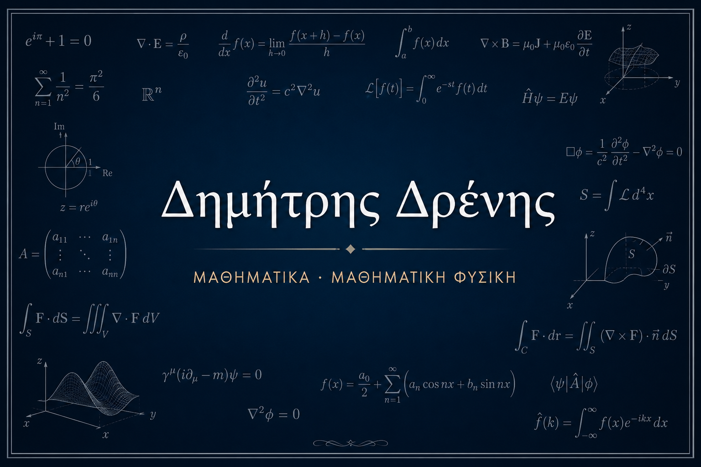

01
Λογισμός 4
Διπλά και τριπλά ολοκληρώματα, αλλαγές μεταβλητών, επικαμπύλια και επιφανειακά ολοκληρώματα, καθώς και τα θεωρήματα Green, Gauss και Stokes.

Στην ιστοσελίδα θα βρείτε οργανωμένες σημειώσεις, μεθοδολογίες, παρατηρήσεις και εκπαιδευτικό υλικό για πανεπιστημιακά μαθηματικά και μαθηματική φυσική.
Διπλά και τριπλά ολοκληρώματα, αλλαγές μεταβλητών, επικαμπύλια και επιφανειακά ολοκληρώματα, καθώς και τα θεωρήματα Green, Gauss και Stokes.
Είμαι καθηγητής μαθηματικών με ειδίκευση στα Θεωρητικά Μαθηματικά και ασχολούμαι με τη διδασκαλία και τη μελέτη των μαθηματικών. Ιδιαίτερο ενδιαφέρον έχω για την ανάλυση, τις διαφορικές και μερικές διαφορικές εξισώσεις, τη διαφορική γεωμετρία και τη μαθηματική φυσική.
Στόχος της ιστοσελίδας είναι η δημοσίευση κατανοητών και οργανωμένων σημειώσεων που εξηγούν όχι μόνο τους τύπους, αλλά και τη μεθοδολογία και τη βαθύτερη μαθηματική ιδέα πίσω από αυτούς.